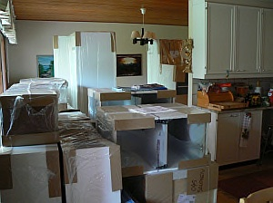
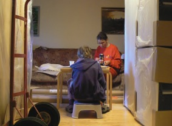
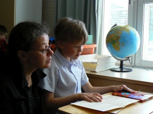
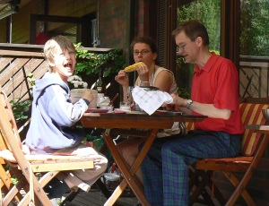
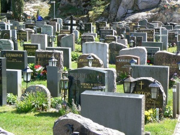
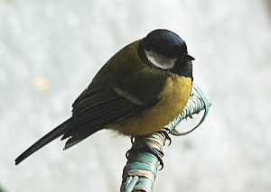

Toukokuu 2007 |
Keittiön remontointiaOlemme jo pitemmän aikaa harkinneet asuntomme remontointia. Päätimme aloittaa tärkeimmästä eli keittiöstä ja tammikussa kävimme tutkailemassa vaihtoehtoja. Halusimme uusia kaikki kalusteet ja koneet. Teimme sopimuksen Puustellin kanssa avaimet käteen -toimituksesta. Ajankohdaksi sovimme touko-kesäkuun vaihteen, koska tiesimme olevamme silloin viikon lomalla Vierumäellä ja niin ollen pois jaloista. Tavaroiden toimitus tapahtui aivan kuun lopulla, pari päivää ennen lomamme alkua. Onneksi olimme kuulleet muilta keittiön remontoijilta, että tavaraa tulee "tupa täyteen", joten ymmärsimme raivata olohuoneeseen tilaa ja poistaa ruokailutilasta kattolampun. Mirja oli pääasiassa huolehtinut kaappien tyhjentämisestä ja tavaroita oli varastoitu saunaan, makuuhuoneisiin, varastoon, terassille jne. Onneksi emme joutuneet asumaan kuin pari päivää remontin keskellä, sillä tilaa ei ollut oikein missään ja kaikki astiat ja keittiövälineet ja välillä perhekin olivat "hukassa" (ainakin minulta). Samin kouluvuosiSamin ensimmäinen kouluvuosi on takanapäin. Koulu on sujunut ongelmitta ja monia asioita Sami on vuoden aikana oppinut. Yksi tärkeä asia on itsenäistyminen. Sami hoitelee rohkeasti omia pikkuasioitaan kirjastossa, kioskilla ja muualla. Toista oli silloin, kun me olimme lapsia. Kouluun olemme Samin vieneet aamuisin ja iltapäivällä hakeneet. Koulumatka ja kotiintulo sujuisi kyllä ilman meitäkin, mutta kotiovemme lukko on vähän konstikas, eikä Sami saa sitä oikein auki, joten olemme käyneet hakemassa Samin kotiin tullessamme. Tosin monesti olemme saaneet vain repun kuljetettavaksi, kun poika on halunnut itse kävellä kotiin. Ekaluokkalaisten todistuksissa ei ole numeroita, niin kuin silloin, kun me olimme koulussa. Todistuksessa arvioitiin äidinkieltä, matematiikkaa, käyttäytymistä ja työskentelyä. Samin arvioinnit olivat erinomaisia tai hyviä. Sanallisissa arvioinneissa oli mainittu "Osaat kirjoittaa jo pieniä tarinoita" ja "Työskentelet ahkerasti ja keskittyneesti". |
Kuukauden sääToukokuun sää oli kohtalaisen lämmin ja vähäsateinen. Loppukuussa saatiin ukkosmyräkkä, jossa salamat välähtelivät muutaman sekunnin välein ja vettä satoi niin, että hiekkapoluille ilmestyi syviä uureita ja kaupungin miehet keräilivät pari päivää kaduille valuneita hiekkoja pois. Kuukauden ajatusVauraus on muuttunut päämääräksi, jolle alkuperäinen päämäärä, hyvä elämä, on uhrattu. - Osmo Soininvaara - Kuukauden kuvaTintti |